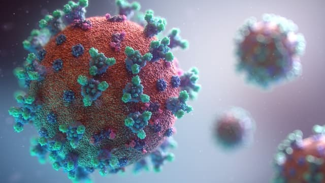

Fábrica de Felicidade - 2022
Incentivo à Saúde
Por Shin emSaúde
Se existe algo que é muito presado nos dias atuais é a saúde. É uma coisa que não se compra e muitas vezes deixamos de lado a ponto de aparecerem problemas irreversíveis.
Saúde e Pandemia
A pandemia deixou em evidência o crescimento de casos de pessoas com ansiedade, resultando em um grande atenção de todos para a saúde dos seus colaboradores, principalmente a mental.
A insegurança, o medo e até mesmo a falta de compreensão total sobre a COVID-19 no início da pandemia causou diversos impactos negativos na nossa geração.
Inicialmente só tínhamos a informação de que precisávamos nos isolar das outras pessoas para evitar o contágio. Foi quando algumas pessoas que já viviam sozinhas ficaram cada vez mais solitárias em suas casas. Um período para se reinventar como pessoa, como colaborador(a) ou até mesmo como líder/chefe.
Novo cenário da Saúde
A transformação para este novo cenário de isolamento social devido a pandemia, até hoje carrega suas consequências. Depressão e ansiedade são as mais faladas, mas vale lembrar que a saúde mental é muito mais do que a mera ausência de transtornos mentais.
Segundo a Organização Mundial da Saúde (OMS), “a saúde mental é um estado de bem-estar no qual um indivíduo realiza suas próprias habilidades, pode lidar com as tensões normais da vida, pode trabalhar de forma produtiva e é capaz de fazer contribuições à sua comunidade”. (Fonte: https://www.paho.org.br)
Não existe saúde completa se não há saúde mental. Porém, ela depende de muitos fatores, sejam biológicos, psicológicos ou socioambientais. É de se esperar que uma pandemia de tamanha magnitude também tenha efeitos nesse estado de bem-estar das pessoas.
Incentivar a saúde
Mas como reduzir ou amenizar esse impacto? É isso que várias pesquisas estão mapeando no Brasil e no mundo.
No momento de hoje é essencial que as organizações incentivem os seus colaboradores a buscar ajuda necessária para a saúde, como melhor alimentação e cuidados psicológicos.
Benefícios da Felicidade
Os benefícios de um colaborador feliz, realizado, confortável e com sentimento de segurança é essencial para a qualidade de vida pessoal e corporativa.
Muitos estudos comprovam o aumento significativo de performance dos colaboradores que trabalham felizes.
As empresas podem fazer esse incentivo de diversas formas começando abrindo um meio de comunicação com todos os afetados por essas doenças mentais, identificando isso pode se buscar um caminho para minimizar os danos causados por essas doenças.
Gratidão pela sua leitura e um forte abraço. 😉